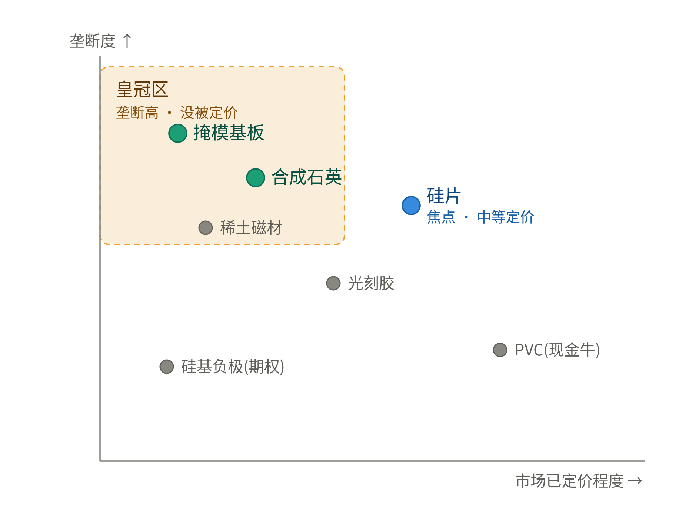
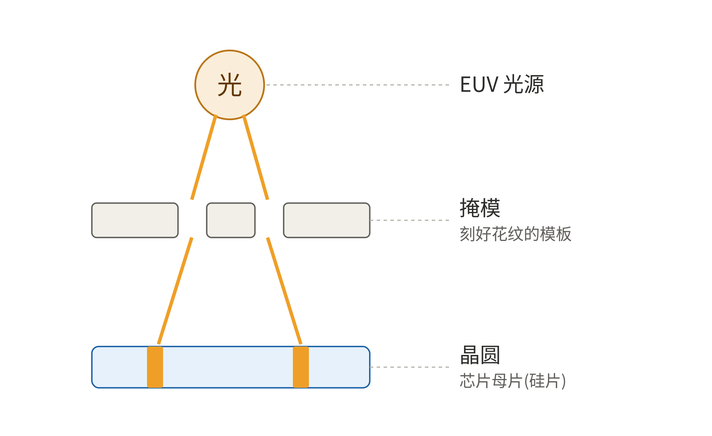
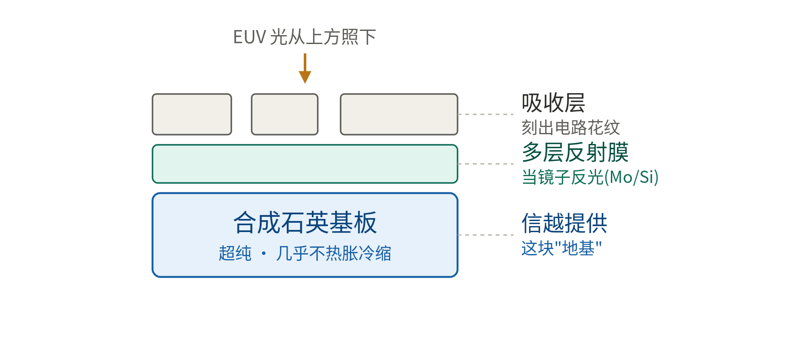
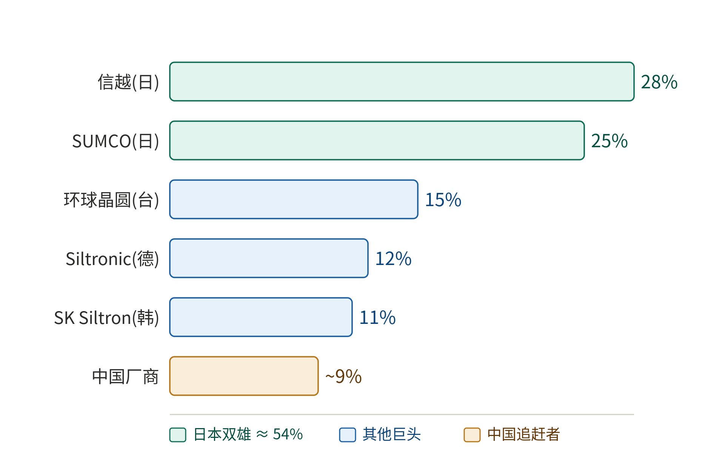
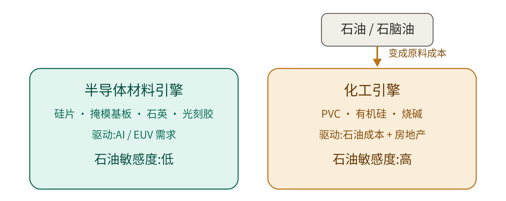
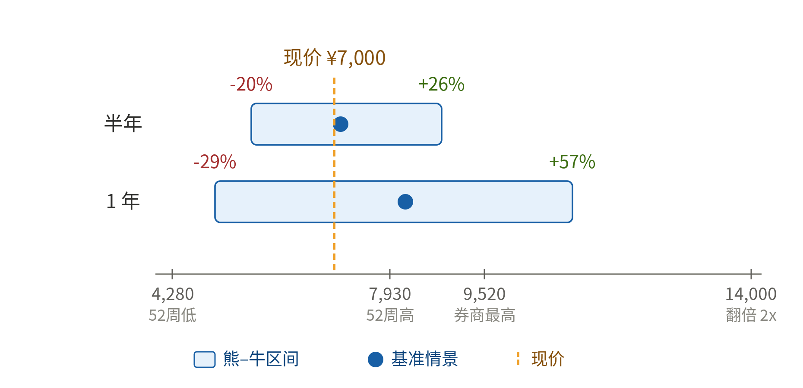

信越化学（Shin-Etsu Chemical，4063.T）
费曼式深度解读：卡脖子材料、硅片格局、石油敞口与投资赔率
整理自对话 · 2026年7月 · 本文仅供研究与学习，不构成任何投资建议
导读
这份文档把我们围绕信越化学展开的整场讨论，重新梳理成一份有逻辑的知识笔记。它不按聊天的先后顺序，而是按“先认识公司全貌，再逐块拆解材料，然后谈格局、成本、最后落到投资视角”的顺序组织。
全文坚持“费曼小白”的讲法：每个概念先用大白话和比喻讲清“是什么、为什么”，再上数据和术语；适合对比的内容用表格呈现，关键机制配示意图。文中引用过的具体数据都用编号 [n] 标注来源，完整来源列表见文末附录。
核心结论先给你：信越不是一只“硅片股”，而是“一篮子近乎垄断的卡脖子材料 + 现金牛化工 + 净现金 + 大回购”的堡垒复利机。它真正最硬的垄断（EUV 掩模基板、合成石英）反而最没被市场定价；而它的择时开关，落在一个化工变量上——PVC 见底。
目录
第一部分 信越是一家什么样的公司 3
1.1 一句话定位：不是“硅片股”，是“堡垒复利机” 3
1.2 一篮子卡脖子材料：垄断度 × 是否被定价 3
1.3 两台引擎：半导体材料 vs 化工 4
第二部分 皇冠材料：费曼式拆解 4
2.1 芯片是怎么造出来的：用光“印花纹” 4
2.2 EUV 掩模基板：还没刻花纹的“空白模板” 5
2.3 合成石英：超纯玻璃“地基” 6
2.4 光刻胶与封装材料（补充） 6
第三部分 硅片这条线：紧缺、格局与国产替代 6
3.1 硅片是半导体最上游的材料 6
3.2 为什么紧缺：AI/HBM 的“3 倍蚕食” 7
3.3 全球竞争格局：教科书级寡头垄断 7
3.4 中国追赶者与国产替代 8
3.5 为什么护城河这么深 8
3.6 信越在硅片上：“是稳不是爆” 8
第四部分 现金牛、期权与财务堡垒 9
4.1 化工现金牛：PVC 与有机硅 9
4.2 两块被忽略的“期权” 9
4.3 财务堡垒：净现金 + 大回购 9
第五部分 石油、地缘政治与利润的关系 10
5.1 只有“化工引擎”吃石油 10
5.2 真正决定盈亏的是“价差”，不是油价高低 10
5.3 地缘政治为何是关键（以及为何油价下跌反而是顺风） 11
第六部分 投资视角：为什么没涨、赔率与择时开关 11
6.1 为什么“没怎么涨”：被 PVC 盖住 11
6.2 相位开关：PVC 见底（价格底 ≠ 利润底） 11
6.3 现价买入的赔率：半年 / 1 年三情景 12
6.4 信越 vs SUMCO：核心 vs 交易 13
6.5 批判性评价与风险清单 13
附录 数据来源 14
第一部分 信越是一家什么样的公司
1.1 一句话定位：不是“硅片股”，是“堡垒复利机”
市场一提到信越，第一反应就是“硅片龙头”。但这只看到了冰山一角。信越真正的身份，是把好几门近乎垄断的生意装进了一家公司：
一篮子“卡脖子材料”：EUV 掩模基板、合成石英、半导体硅片、光刻胶等，几乎每一样都是先进芯片绕不开、又只有极少数厂商能做的关键耗材。
现金牛化工：PVC、有机硅、烧碱等，提供稳定的利润底和定价权。
财务堡垒：净现金、超高权益比、每年巨额回购+分红。
把这三块加起来，它更像一台“堡垒复利机”——靠垄断和现金流慢慢滚雪球，而不是靠单一产品的暴涨暴跌。这也是为什么它能被当作“核心重仓”而不是“短线交易”。
1.2 一篮子卡脖子材料：垄断度 × 是否被定价
理解信越的关键，是同时看两个维度：一样材料“有多垄断”，以及这种垄断“有没有被股价反映（price in）”。同一波 AI/EUV 景气，其实同时点着信越好几条产品线，而最垄断的那几样，恰恰最没被市场讲、最没被定价。
| 材料线 | 垄断度 | 与 AI/EUV | 是否被定价 |
| EUV 掩模基板 | 极高 | 直接 | 低 |
| 合成石英 | 极高 | 直接 | 低 |
| 半导体硅片 | 高 | 直接 | 中 |
| 光刻胶（含 EUV） | 高 | 直接 | 中低 |
| 稀土磁材 | 高 | 间接 | 低 |
| 硅基负极 | 期权 | 间接 | 极低 |
| PVC / 有机硅 | 全球 #1/#2 | 现金牛 | — |
把这张表画成一张“四象限图”就更直观了：横轴是“市场已定价程度”，纵轴是“垄断度”。真正的皇冠——掩模基板和合成石英——落在左上角：垄断极高，却几乎没被定价。硅片虽是市场焦点，但只是“中等垄断、中等定价”那一条。

图 1 信越材料的“垄断度 × 是否被定价”四象限：左上角是没被定价的皇冠
看懂这张图就看懂了重仓逻辑：买信越等于买这一整篮子，而不是买单一硅片。
1.3 两台引擎：半导体材料 vs 化工
信越还可以拆成“两台完全不同的引擎”装在一家公司里，这个视角在后面讲石油风险时特别重要。左边是半导体材料引擎（硅片、掩模基板、石英、光刻胶），由 AI/EUV 需求驱动、几乎不直接烧石油；右边是化工引擎（PVC、有机硅、烧碱），由石油成本和房地产需求驱动、对油价高度敏感。两台引擎的驱动力和风险来源完全不同——详见第五部分。
第二部分 皇冠材料：费曼式拆解
2.1 芯片是怎么造出来的：用光“印花纹”
先建立一个最朴素的画面。造芯片，本质上就是“用光在硅片上印花纹”，原理和拿一块镂空的模板喷漆很像：光透过（或反射）一块刻着电路图案的“模板”，把图案投影到硅片上。
那块模板就叫掩模（mask，也叫光罩）。而 EUV 里的 EUV，是 Extreme Ultraviolet（极紫外光）的缩写，波长只有 13.5 纳米，短到能刻出当今最精细的芯片电路。下面这张图是这个“光印花纹”的直觉（为了好懂画成透射式，真实 EUV 是反射式）：

图 2 光刻的直觉：光穿过刻好花纹的掩模，把电路图案印到晶圆上
2.2 EUV 掩模基板：还没刻花纹的“空白模板”
掩模基板（mask blank），就是上面那块掩模在“刻花纹之前”的空白毛坯。信越做的正是这个空白毛坯，芯片厂再拿去刻上具体电路。它不是一块普通玻璃，而是一叠精密材料的“千层饼”：最底下是合成石英基板（地基），上面镀一层“多层反射膜”当镜子反光，最上面才是刻出花纹的吸收层。

图 3 EUV 掩模基板的横截面：合成石英基板 + 多层反射膜 + 吸收层
为什么它是“皇冠”：全球 EUV 掩模基板基本是信越 + Hoya 双寡头，格局比硅片还紧、毛利更高；而且先进制程层数越多、用量越大。这块的垄断度比硅片更强，却更少被拿出来炒 [报告]。
2.3 合成石英：超纯玻璃“地基”
上面那块蓝色的地基，就是合成石英。它的化学成分就是二氧化硅（SiO₂），和沙子、水晶同类。关键在“合成”两个字：普通玻璃是拿天然砂子烧的，混着铁、钠等杂质；合成石英是用高纯度气体化学反应“长”出来的，纯度高到近乎完美。
这带来两个别人做不到的性质。其一，对光几乎零吸收、零扭曲——紫外/极紫外光能干干净净地穿过或反射，图案才不会糊。其二，几乎不热胀冷缩——光刻时掩模会被光照热，材料一变形，几纳米宽的电路就全错位了；合成石英受热尺寸几乎不变，所以能当那块“绝对稳定的地基”。
正因为对纯度和稳定性的要求变态地高，全世界能量产顶级合成石英的公司屈指可数，信越是龙头。它不光用于掩模基板，也用来做 EUV/DUV 光刻机的镜头、光纤预制棒等 [报告]。
2.4 光刻胶与封装材料（补充）
除了掩模基板和石英，信越还是光刻胶（含 EUV 胶）的主力玩家之一；先进节点越卷、EUV 层数越多，光刻胶用量越大。此外还有光罩保护膜（pellicle）与先进封装材料，同吃先进封装的景气。所谓“AI 材料”，在信越不是一条线，而是一篮子卡脖子耗材同时受益——这比只有硅片的同业厚实得多 [报告]。
第三部分 硅片这条线：紧缺、格局与国产替代
3.1 硅片是半导体最上游的材料
要区分清楚：这里说的“硅片”是半导体硅片（大硅片，主要指 12 英寸/300mm），不是太阳能光伏那种硅片。它是造芯片的最底层衬底——任何芯片，无论是逻辑芯片（GPU/CPU）还是存储芯片（DRAM/HBM/NAND），第一步都是从一片空白的硅晶圆开始的。
所以产业链顺序大致是：硅片（衬底）→ 半导体设备 + 材料 → 晶圆制造（代工/存储厂）→ 封测 → 芯片。硅片位于材料环节里最上游、最基础的位置。
3.2 为什么紧缺：AI/HBM 的“3 倍蚕食”
这轮硅片紧张的真正主角是 HBM（高带宽内存）。AI 数据中心目前吃掉了全球约 70% 的存储芯片产能，而 HBM 是“堆叠”结构，同样存一个 bit，它比普通 DRAM 要消耗多得多的晶圆——报告的说法是对晶圆产能“3 倍蚕食”（投 10 万片名义、实际有效仅约 3 万片）[报告]。
于是三星、SK 海力士、美光把产能拼命往 HBM 倾斜，同时新建晶圆厂（三星平泽 P5、海力士 M15X）[2]。而 NVIDIA 的 GPU 和它旁边的 HBM 都刻在硅片上，AI 服务器同时在两头拉动硅片需求。多家口径缺货到 2027–28 年，SK 海力士董事长崔泰源甚至称硅片短缺可能延续到 2030 年；新增产能要到 2027 下半年才逐步释放 [1][3]。
3.3 全球竞争格局：教科书级寡头垄断
300mm 硅片是一个高度集中的寡头市场：全球五大厂商合计约占 85% 的产能，剩下不到 15% 才由中国厂商等分。日本双雄（信越 + SUMCO）合计就超过一半 [4]。

图 4 2025 年全球 300mm 硅片市场份额：日本双雄合计约 54%
| 厂商 | 地区 | 份额 | 备注 / 代码 |
| 信越化学 Shin-Etsu | 日本 | ~28% | 全球第一，4063.T |
| SUMCO | 日本 | ~25% | 与信越合计 >50%，3436.T |
| 环球晶圆 GlobalWafers | 中国台湾 | ~15% | 6488.TW，美国德州扩产 |
| Siltronic | 德国 | ~12% | WAF.DE |
| SK Siltron | 韩国 | ~11% | SK 集团旗下，未单独上市 |
| 中国厂商合计 | 中国大陆 | ~9% | 国产替代主线 |
3.4 中国追赶者与国产替代
国产大硅片已开启大规模扩产，是“国产替代”的一条主线，但整体仍处在“投资期 + 建设期 + 产能爬坡期”三期叠加，中低端（28nm 及以上）已量产突破，高端仍被日德企业卡着 [5][6]。
| 公司 | 代码 | 现状 |
| 沪硅产业 | 688126.SH | 大陆龙头，拟投约 132 亿元扩产，目标 300mm 产能 120 万片/月 |
| TCL 中环 | 002129.SZ | 大尺寸半导体硅片布局 |
| 立昂微 | 605358.SH | 12 英寸量产、产能爬坡 |
| 中欣晶圆 | 未上市 | 12 英寸抛光片月产能突破 45 万片 |
| 有研硅 | 688432.SH | 12 英寸约 10 万片/月，拟提升至 15 万片 |
| 奕斯伟 / 超硅 | 未上市 | 新建产能爬坡中 |
3.5 为什么护城河这么深
硅片要长成近乎完美的单晶，纯度做到 11 个 9（99.999999999%），表面平整度以纳米计，还要通过芯片厂长达数年的认证；资本开支是几十亿美元级别、技术是几十年积累。这就是为什么二十年下来还是那五家，新玩家极难挤进最高端。中国国产化是长期变量，但份额演进大致是“十年一个点”，短期壁垒依然稳固 [报告]。
3.6 信越在硅片上：“是稳不是爆”
硅片紧缺是“物理锁死”的（HBM 蚕食、扩产 4–5 年建厂周期），但信越走长期协议（长协），价格是“稳步阶梯”而不是“暴涨”。三大厂已指引 2026 下半年再涨 5–8%，12 寸抛光片约 80 美元、外延片破 100 美元，高端 EUV 级片有 18–25% 溢价；但硅片价格黏性强，过去 5 年 ASP 仅在 88–112 美元区间波动，是“一年个位数到十几个点稳涨”，不是 DRAM 那种单季 +60% [报告]。
换句话说：紧缺的暴利归存储厂（SK 海力士某季营业利润同比 +405%、利润率约 72%），信越走长协、稳步受益——是“稳”不是“爆”。想博纯弹性看存储厂，图长期确定性看信越 [报告]。信越硅片分部营收约 5,800 亿日元、毛利约 28% [报告]。
第四部分 现金牛、期权与财务堡垒
4.1 化工现金牛：PVC 与有机硅
PVC 全称 Polyvinyl Chloride，中文叫“聚氯乙烯”，是最常见的塑料之一——你家的白色水管、窗框、地板革、电线外皮很多都是它。信越通过美国子公司 Shintech 是全球 PVC 产量第一/第二。房地产和油价配合时，PVC 是现金奶牛（现在是拖累）。
有机硅在 2026 年 5 月刚全球提价 10%+，说明定价权是真的；再加上烧碱、纤维素（用于医药/建筑），共同构成稳定的现金流和利润底 [报告]。
4.2 两块被忽略的“期权”
信越还有两块很少被提到、但可能带来新增长曲线的业务，报告称之为“期权”：
稀土磁材：日本龙头，受益于机器人、电驱、EV、HDD 等需求（间接吃 AI/自动化）。
硅基负极：下一代锂电池负极材料，一旦放量就是一条新曲线。
4.3 财务堡垒：净现金 + 大回购
这是信越能当“核心底仓”的底气——真利润、真现金、真回报，和亏损弹性股是两个极端：
| 指标 | 数值 / 说明 |
| FY26 营业利润率 | 24.7% |
| 净现金 | 现金约 8,827 亿日元；权益比 82.6% |
| 负债率 | 仅 16.5%，商誉几乎为零 |
| ROE | 约 12–15% |
| FY26 股东回报 | 约 7,000 亿日元（5,000 亿回购执行完 + 2,500 亿新回购 + 1,977 亿分红） |
以上财务数据来自报告对公司财报的整理 [报告]。
第五部分 石油、地缘政治与利润的关系
5.1 只有“化工引擎”吃石油
一个特别容易搞混的点：信越的利润“跟石油高度相关”这句话，只对“一半的信越”成立。它的两台引擎里，只有化工引擎吃石油。

图 5 信越两台引擎与石油敞口：石油只流进化工引擎
左边的半导体材料引擎，成本主要是超高纯原料、电力和工艺，几乎不直接烧石油，利润被 AI/EUV 需求推着走；右边化工引擎才是吃石油的：PVC 的主原料是乙烯，乙烯来自石脑油（naphtha）裂解，而石脑油就是炼油产物，有机硅、烧碱也高度依赖油价和能源价格。所以“很多材料要用石油做”精确说是“化工那一半要用石油做”。
5.2 真正决定盈亏的是“价差”，不是油价高低
这里有个重要修正，别把它记成简单的反比。真正决定 PVC 赚不赚钱的，不是油价的绝对高低，而是“价差”（售价 − 原料成本）：
油涨时，PVC 成本上升，但竞争对手成本也一起涨，PVC 售价往往跟着抬，所以不必然亏。
信越现在这轮的痛，是更糟的组合——“售价跌 + 成本涨”的双杀：房地产不振、中国过剩把 PVC 售价压到 20 年低点，同时前两年油价还在高位，两头挤压，价差被打没了 [报告]。
5.3 地缘政治为何是关键（以及为何油价下跌反而是顺风）
中东局势（霍尔木兹海峡、油轮、停火能否维持）直接决定油价，油价又直接决定化工引擎的成本。这就是为什么公司连 FY27 业绩指引都不敢给——因为油价这个变量他们自己控制不了，乐观与悲观情景差得太远 [9]。
反直觉的地方在于：对当下的信越来说，油价下跌反而是好事。油价从 120+ 美元跌到约 70 美元（−36%），化工引擎的成本这条腿正在松，毛利在修复——这恰恰是“PVC 利润底前移”的催化剂。因此你担心的地缘风险（停火破裂、油价重新飙升）真正的杀伤力，不只是当期利润变差，更是会把 PVC 见底这个催化剂往后推，让那台被盖住的半导体引擎迟迟不能露出来重定价 [报告]。
第六部分 投资视角：为什么没涨、赔率与择时开关
6.1 为什么“没怎么涨”：被 PVC 盖住
存储厂已把现货超级周期 price in（股价创新高），而信越基本没动。原因不是不行，而是被暂时遮住：
PVC 把利润表拖成负增长——FY26 营业利润 −14.4%、净利 −11.2%，硅片和皇冠的强被盖住 [报告]。
成熟制程/200mm 去库存，让“硅片故事”看起来不干净。
估值本来就贵（P/E 约 26–27x），不是深度价值 [报告]。
6.2 相位开关：PVC 见底（价格底 ≠ 利润底）
全篇逻辑的胜负手是“PVC 见底”。但要分清两个底：PVC 的价格底（2025 年出口价创 20 年新低、多数厂亏本，现在在磨底）与信越的利润底（随成本端回落，拐点正在前移）。真正要盯的核心信号是：信越“基础材料”分部营业利润未来 1–2 个季度能否止跌转正 [报告]。
PVC 见底由三条驱动共同决定，当前进度如下：
| 驱动 | 现状 | 进度 |
| 供给（减产） | 欧日美已关约 200 万吨；中国 Q2'26 去库拐点、年底库存有望 <80 万吨 | 正在见底 |
| 需求（建筑/利率） | 美国房地产受高利率压制、近期难复苏；中国企稳但不强 | 拖后腿 |
| 成本（油/石脑油） | 油价从 120+ 回落至约 70（−36%）、霍尔木兹重开 | 已在缓解 |
五个按季跟踪的信号：①信越“基础材料”分部营业利润 YoY 止跌（核心）；②中东 60 天停火是否维持；③美国 PVC 提价站住 + 美联储降息带动美房；④中国去库（库存 <80 万吨）+ 减产继续；⑤ Shintech 开工率 / 美国建筑支出回升 [报告]。
6.3 现价买入的赔率：半年 / 1 年三情景
先摆关键数据（2026 年 7 月 1 日）：现价约 7,000 日元，市值约 13.02 万亿日元，P/E 约 27.5x（且是在利润下行周期的低谷 EPS 上，估值不便宜），52 周区间 4,280–7,930 日元（其实一年里已从低点涨约 63%，离高点只差约 12%）。分析师 12 个月平均目标价 7,958 日元、最高 9,520、最低 5,750，13 家买入 0 家卖出；公司因地缘/油价不确定，FY27 不给业绩指引 [7][8][9]。

图 6 现价 ¥7,000 的半年 / 1 年风险收益区间（情景测算）
| 期限 | 熊市（下行） | 基准 | 牛市 / 炒作（上行） |
| 半年 | ≈ ¥5,600 / −20%（深熊 −26%） | ¥6,800–7,400 / −3%~+6% | ¥8,000–8,800 / +14%~+26% |
| 1 年 | ¥5,000–5,800 / −17%~−29%（深熊回 ¥4,280，−39%） | ¥7,900–8,500 / +13%~+21% | ¥9,500–11,000 / +36%~+57% |
“翻倍”（约 ¥14,000，+100%）需要利润和估值同时大幅上修，是小概率尾部，且现实里更可能是 1 年以上、而非 12 个月内。
赔率结论：按 1 年看，大致是上行 +15%~+57%、下行 −20%~−39%，盈亏比约 1.3–1.5:1，略微偏正但谈不上“极不对称的好赔率”。原因很直接：它贴着 52 周高点、满估值、利润还在负增长、公司自己都不敢给指引，下行安全垫薄；而上行又受制于“它是 13 万亿市值的大盘蓝筹，不是小盘弹簧”，半年到一年内几乎不可能翻倍。想博“倍数弹性”，方向就搞反了——那是 SUMCO / 存储厂那种高弹性高周期的活。
6.4 信越 vs SUMCO：核心 vs 交易
SUMCO（3436）只有硅片一条线，高弹性、高周期、单点——更像“交易”。信越是一篮子卡脖子材料 + 现金牛 + 净现金 + 大回购——是“复利机器”。博纯弹性买 SUMCO；要重仓拿多年的核心，是信越 [报告]。
6.5 批判性评价与风险清单
这份研究框架清晰、不回避缺点，风险条件写得可跟踪，比多数只喊口号的看多报告扎实。但有几处需要打问号：
核心逻辑高度依赖“叙事重估会发生”这个假设——即 PVC 一见底，掩模基板和石英的垄断价值就会被重新定价。但“没被定价”也可能是因为这两块体量占比不大（都是小分部），就算再垄断，对整体利润的拉动也有限。报告没给这两块的具体营收/利润占比，这是论证最薄的一环：垄断度高 ≠ 对股价弹性大。
“PVC 见底”是择时判断而非事实。油价回落是真的，但需求端（美国高利率房地产、中国过剩）报告自己都承认是 L 型拖累，“利润拐点前移”更多是乐观推断。
估值贵 + 容错薄。26–27x 的 P/E 对一个 FY26 利润还在负增长的公司，一旦 PVC 见底比预期晚，杀估值的风险实打实。
这是卖方式的单边看多（虽反复标注“不构成投资建议”），通篇在找买入理由，读时要主动补上“如果它错了会怎样”。
其他风险：中国硅片国产化长期压寡头定价权；硅片受益“是稳不是爆”，博弹性它不是最锋利的刀。
一句话总结：这是一份框架漂亮、逻辑自洽、但结论依赖两个乐观假设（叙事重估 + PVC 及时见底）的看多报告。它最有价值的不是“买不买”，而是给了一个清晰的观察清单——盯“基础材料分部营业利润能否转正”这一个信号，就能验证它对错。
附录 数据来源
文中 [报告] 指用户提供的《信越化学研究报告（手机版）· 财多多农场 · 2026/06/30》；其余编号来源如下：
[1] Tom’s Hardware — SK hynix to double memory wafer capacity; AI-driven shortage until 2030. https://www.tomshardware.com/pc-components/dram/sk-hynix-to-double-memory-wafer-capacity-over-five-years
[2] DataCenterDynamics — Samsung and SK Hynix to scale up memory capacity in 2026. https://www.datacenterdynamics.com/en/news/samsung-and-sk-hynix-to-scale-up-memory-production-capacity-in-2026-to-meet-ai-demand/
[3] Fortune — Rampant AI demand for memory is fueling a growing chip crisis. https://fortune.com/2026/02/15/ai-demand-memory-chip-shortage-crisis-dram-hbm-micron-skhynix-samsung/
[4] Mordor Intelligence — Semiconductor Silicon Wafer Market Share Analysis. https://www.mordorintelligence.com/industry-reports/semiconductor-silicon-wafer-market
[5] Tianxia Gongchang（天下工场）— China Semiconductor Silicon Wafer 2026 · 300mm Localization. https://faxiangongchang.com/en/reports/china-semiconductor-silicon-wafer-2026
[6] 新浪财经 — 2025 中国硅片上市公司研究报告 / 国产半导体硅片企业最新排名。https://finance.sina.com.cn/roll/2025-11-10/doc-infwwrnw7830066.shtml
[7] Investing.com / Yahoo Finance — 信越化学 4063.T 股价、估值、52 周区间。https://www.investing.com/equities/shin-etsu-chemical-co.,-ltd.
[8] MarketScreener — 信越化学 目标价共识与分析师评级。https://www.marketscreener.com/quote/stock/SHIN-ETSU-CHEMICAL-CO-LTD-6491197/consensus/
[9] note.com — 信越化学 FY26 决算分析：业绩“未定”+ 5000 亿回购的悖论。https://note.com/mangawakaru/n/nb54109e72819
免责声明：本文由对话整理而成，仅供研究与学习之用；所涉“垄断度”“被定价程度”“情景/赔率”等均为讨论中的观点与测算，不构成目标价或任何买卖建议。投资有风险，请独立判断、自负盈亏。